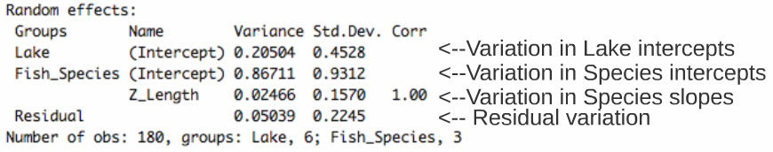
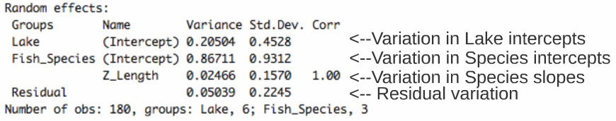

2.1: Construction du modèle a priori et exploration des données
2.2: Coder les modèles potentiels et sélectionner le meilleur modèle
2.3: Valider le modèle
2.4: Interpréter les résultats et visualiser le modèle
9.2 Construction du modèle a priori et exploration des données
Nous voulons déterminer si la position trophique peut être prédite par
la longueur corporelle, tout en prenant en compte la variation entre les
espèces et les lacs. Donc nous voulons un modèle qui ressemble à ceci:
<m>{PT_ijk}</m> est la position trophique du poisson (i) du lac (j)
et de l’espèce (k)
et
ε sont les résidus du modèle (c. à d. la variation inexpliquée).
Exploration des données
Assurez-vous d’avoir fait le ménage de l’espace de travail
(Housekeeping) avant de construire un modèle ! Les données ont-elles la
bonne structure ? Utilisez le code suivant pour visualiser la structure
et les types de variables au sein de votre jeu de données.
################ Section 2######################### Exécution d'un modèle################ mixte en R Processus de quatre étapes pour la construction################ d'un modèle mixte en R# 1) Construction du modèle a priori et exploration des# données #### i) Définir un modèle basé sur une connaissance# a priori Nous savons que nous voulons construire un modèle# qui évalue la relation entre la position trophique et la# longueur tout en tenant compte de la variation due au lac# et à l'espèce Position trophique ~ Longueur + Espèce + Lac# ii)Housekeeping et exploration des données Assurez-vous que# la structure de vos données soit correctestr(data)
++++ Sortie | ++++
Regardez la distribution des échantillons pour chaque facteur :
# Regardez la distribution des échantillons de chaque facteur# pour vérifier si le jeu de données est équilibrétable(data$Lake)table(data$Fish_Species)
++++ Sortie | Lac
----
---- Espèce
----
---- ++++
Ce jeu de donné est parfaitement équilibré, mais les modèles mixtes
peuvent analyser les plans expérimentaux non équilibrés (comme c’est
souvent le cas en écologie!)
Regardez la distribution des variables continues :
# Regardez la distribution des variables continues# Transformez si nécessaire (ça évitera des problèmes# d’hétérogénéité des résidus du modèle)hist(data$Fish_Length)hist(data$Trophic_Pos)
Des déviations majeures pourraient causer des problèmes
d’hétéroscédasticité. Si c’est nécessaire, appliquez des
transformations à vos données. Dans ce cas-ci, les données semblent
correctes.
Vérifier la colinéarité entre vos variables explicatives : Vous ne
pouvez pas inclure deux variables explicatives colinéaires dans un même
modèle, car leurs effets sur la variable réponse seront confondus,
c.-à-d. que le modèle ne peut pas indiquer quelle variable colinéaire
est responsable de la variation de la variable réponse. Par défaut, le
modèle attribuera beaucoup de pouvoir explicatif à la première variable
du modèle et peu de pouvoir aux variables qui suivent.
Dans cet exemple, il n’y a pas de risque de colinéarité avec seulement
une variable explicative continue. Si vous aviez une autre variable
explicative (Var2) et vouliez vérifier la colinéarité, vous pouvez
utiliser le code suivant :
# Évaluer la colinéarité entre variablesplot(data)cor(data$Fish_Length, data$Var2)
DÉFI 3
Quelles mesures supplémentaires aurions-nous pu prendre sur le terrain
et qui auraient pu être fortement corrélées avec la longueur corporelle?
++++ Réponse défi 3 | Un exemple est la masse du poisson – c’est une
variable fortement corrélée avec la longueur du poisson. Par conséquent,
nous ne voulons pas inclure ces deux variables dans le même modèle. ++++
Considérez l’échelle de vos données :
Si deux variables dans le même modèle ont des valeurs se situant sur des
échelles très différentes, il est probable que le modèle mixte indique
un ‘problème de convergence’ en essayant de calculer les paramètres.
La correction Z standardize les variables et résout ce problème. Elle
permet également de mettre toutes vos variables sur la même échelle,
même si elles étaient à l’origine de différentes unités :
<m> {z} = ({x} - {mean(x)}) / {sd(x)} </m>
Parce que nos données ont des échelles très différentes, (la longueur
est à une échelle plus longue que la position trophique), on applique la
correction Z.
# Considérez l'échelle de vos données Note : Si deux# variables dans le même modèle ont des valeurs se situant# sur des échelles très différentes, il est probable que le# modèle mixte indique un 'problème de convergence' en# essayant de calculer les paramètres. La correction Z# standardize les variables et résout ce problème : Qu'est-ce# qu'une correction de Z ?: (z = (x - mean(x))/sd(x))# Longueur corrigéedata$Z_Length <-(data$Fish_Length -mean(data$Fish_Length))/sd(data$Fish_Length)# Position trophique corrigéedata$Z_TP <-(data$Trophic_Pos -mean(data$Trophic_Pos))/sd(data$Trophic_Pos)
Pour savoir si un modèle mixte est nécessaire pour vos données, vous
devez déterminer s’il est important de prendre en compte l’effet
aléatoire de facteurs qui pourraient influencer la relation qui vous
intéresse (dans notre cas, Lac et Espèce).
Nous pouvons le faire en :
-Créant un modèle linéaire sans les facteurs qui pourraient avoir un
effet aléatoire
-Calculant les résidus de ce modèle linéaire
-Produisant un graphique de la valeur des résidus en fonction des niveaux des facteurs potentiellement aléatoires
# Déterminez s'il est important de tenir compte des# variations dans les 'effets aléatoires' en comparant les# résidus d'un modèle linéaire sans les effets aléatoires en# fonction des effets aléatoires potentielslm.test <-lm(Z_TP ~Z_Length, data = data)lm.test.resid <-rstandard(lm.test)# Effet de l’espèceplot(lm.test.resid ~data$Fish_Species, xlab ="Species", ylab ="Standardized residuals")abline(0, 0, lty =2)# Effet du lacplot(lm.test.resid ~data$Lake, xlab ="Lake", ylab ="Standardized residuals")abline(0, 0, lty =2)
++++ Sortie| Effet de l’espèce
----
---- Effet du lac
----
---- ++++
Pour ce modèle, nous devrions garder les effets aléatoires parce que les
résidus standardisés montrent une variation à travers le lac et les
espèces.
9.3 Coder les modèles potentiels et sélectionner le meilleur modèle
Notre modèle a priori
<m> {PT_ijk} ∼ {Longueur_i} + {Lac_j} + {Espèce_k} + {ε} </m>
Dans R, on le code ainsi :
La structure de lmer n’est pas intuitive. Les éléments de base de la
fonction sont :
REML (Restricted Maximum Likelihood) est la méthode par défaut dans la
fonction "lmer".
Il est à noter que l’estimateur de l’écart-type (sigma) du maximum de
vraisemblance (ML) est biaisé d’un facteur (n-2) / n. REML corrige ce
biais en faisant un truc (multiplication matricielle de Y telle que la
dépendance à X est enlevée).** En règle générale **, on devrait **
comparer les modèles d’effets aléatoires nichés avec REML** (parce
que nous examinons les composantes de la variance et ceux-ci doivent
être sans biais),** mais lorsque l’on compare des modèles nichés à
effets fixes, nous devrions utiliser ML ** (parce REML fait ce truc
avec les matrices X et Y pour corriger le biais).
Mais comment faire si on souhaite aussi que la pente puisse varier?
DÉFI 4
Réécrivez le code suivant de façon à ce que les pentes de la relation de
la position trophique en fonction de la longueur corporelle varient par
lac et par espèce.
lmer(Z_TP ~Z_Length +(1|Lake) +(1|Species), data = data, REML =TRUE)
Pour déterminer si vous avez construit le meilleur modèle mixte basé sur
vos connaissances a priori, vous devez comparer ce modèle a priori à
d’autres modèles possibles. Avec le jeu de données sur lequel vous
travaillez, il y a plusieurs modèles qui pourraient mieux correspondre à
vos données.
DÉFI 5
Faites une liste de 7 modèles alternatifs qui pourraient être construits
et comparés à partir de celui-ci: Note - Si nous avions différents
effets fixes entre les modèles, nous aurions dû indiquer «REML = FALSE»
afin de comparer les modèles avec des méthodes de vraisemblance tels que
AIC (voir ci-dessus). Cependant, vous devez rapporter les estimations
des paramètres du «meilleur» modèle en utilisant «REML = TRUE».
lmer(Z_TP ~Z_Length +(1|Lake) +(1|Species), data = data, REML =TRUE)
++++ Réponse défi 5 |
m1 <-lmer(Z_TP ~Z_Length +(1|Lake) +(1|Species), data = data, REML =TRUE)m2 <-lmer(Z_TP ~Z_Length +(1+Z_Length |Lake) +(1+Z_Length |Species), data = data, REML =TRUE)m3 <-lmer(Z_TP ~Z_Length +(1|Species), data = data, REML =TRUE)m4 <-lmer(Z_TP ~Z_Length +(1|Lake), data = data, REML =TRUE)m5 <-lmer(Z_TP ~Z_Length +(1+Z_Length |Species), data = data, REML =TRUE)m6 <-lmer(Z_TP ~Z_Length +(1+Z_Length |Lake), data = data, REML =TRUE)m7 <-lmer(Z_TP ~Z_Length +(1+Z_Length |Lake) +(1|Species), data = data, REML =TRUE)m8 <-lmer(Z_TP ~Z_Length +(1|Lake) +(1+Z_Length |Species), data = data, REML =TRUE)# Modèle bonus!M0 <-lm(Z_TP ~Z_Length, data = data)# Il est toujours utile de construire le modèle linéaire de# base sans facteurs avec variation de l'ordonnée à l'origine# ou de pente pour voir la variation dans les valeurs de AICc# values (même si 'lm' n'utilise pas la même méthode# d'estimation).
++++
Maintenant que nous avons une liste de modèles potentiels, nous voulons
les comparer entre eux pour sélectionner celui (ceux) qui a (ont) le
plus grand pouvoir prédictif. Les modèles peuvent être comparés en
utilisant la fonction "AICc" provenant du paquet (package)
"AICcmodavg". Le critère d’information d’Akaike (AIC) est une mesure
de qualité du modèle pouvant être utilisée pour comparer les modèles.
L’AICc corrige pour le biais créé par les faibles tailles
d’échantillon quand le AIC est calculé.
Nous allons aussi construire le modèle linéaire de baselm() parce
qu’il est toujours utile de voir la variation dans les valeurs de AICc.
Pour cette comparaison il est important de changer la méthode à ML
(REML=FALSE) parce que lm() n’utilise pas la même méthode
d’estimation que lmer(). Par contre, il y a une preuve qui démontre
que pour les modèles linéaires de bases les résultats de la méthode des
moindres carrés (Least squares) est équivalente au résultats de la
méthode ML.
# 2) Coder les modèles potentiels et sélectionner le meilleur# modèle #### i) Coder les modèles potentiels Liste de tous# les modèles potentiels --> Note: vous pouvez choisir de ne# pas coder ceux qui n'ont pas de sens biologique.# Construisez aussi le modèle lm() pour voir la variation# dans les valeurs de AICc, mais changez la méthode à ML# (REML=FALSE) parce que lm() n'utilise pas la même méthode# d'estimation que lmer(). Modèle linéaire sans effets# aléatoiresM0 <-lm(Z_TP ~Z_Length, data = data)# Modèle complet avec différents interceptsM1 <-lmer(Z_TP ~Z_Length +(1|Fish_Species) +(1|Lake), data = data, REML =FALSE)# Modèle complet avec différents intercepts et pentesM2 <-lmer(Z_TP ~Z_Length +(1+Z_Length |Fish_Species) +(1+Z_Length |Lake), data = data, REML =FALSE)# Aucun effet Lac, intercept aléatoire seulementM3 <-lmer(Z_TP ~Z_Length +(1|Fish_Species), data = data, REML =FALSE)# Aucun effet Espèce, intercept aléatoire seulementM4 <-lmer(Z_TP ~Z_Length +(1|Lake), data = data, REML =FALSE)# Aucun effet Lac, intercept et pente aléatoiresM5 <-lmer(Z_TP ~Z_Length +(1+Z_Length |Fish_Species), data = data, REML =FALSE)# Aucun effet Espèce, intercept et pente aléatoiresM6 <-lmer(Z_TP ~Z_Length +(1+Z_Length |Lake), data = data, REML =FALSE)# Modèle complet avec intercepts et pentes qui variant par# LacM7 <-lmer(Z_TP ~Z_Length +(1|Fish_Species) +(1+Z_Length |Lake), data = data, REML =FALSE)# Modèle complet avec intercepts et pentes qui variant par# EspèceM8 <-lmer(Z_TP ~Z_Length +(1+Z_Length |Fish_Species) +(1|Lake), data = data, REML =FALSE)# ii) Comparer les modèles en comparant les valeurs AICc# Calculer les valeurs AICc pour chaque modèleAICc <-c(AICc(M0), AICc(M1), AICc(M2), AICc(M3), AICc(M4), AICc(M5), AICc(M6), AICc(M7), AICc(M8))# Mettre des valeurs dans une table pour faciliter la# comparaisonModel <-c("M0", "M1", "M2", "M3", "M4", "M5", "M6", "M7", "M8")AICtable <-data.frame(Model = Model, AICc = AICc)AICtable# M8 a la plus faible valeur AICc donc le meilleur modèle M2# est également un bon modèle, mais tous les autres modèles# ne sont pas aussi bons.
++++ Sortie| ++++
Le modèle avec un AICc plus bas a le plus grand pouvoir prédictif
considérant les données. Certains disent que si deux modèles sont à plus
ou moins 2 unitées d’AICc de différence, leurs pouvoirs prédictifs sont
équivalents. Dans notre cas, on peut regarder de plus près M8 et M2,
mais tous les autres ont des AICc tellement plus élevés qu’on peut
exclure la possibilité qu’ils soient les meilleurs modèles pour nos
données.
# Une fois que les meilleurs modèles sont sélectionnés il# faut remettre REML=TRUEM8 <-lmer(Z_TP ~Z_Length +(1+Z_Length |Fish_Species) +(1|Lake), data = data, REML =TRUE)M2 <-lmer(Z_TP ~Z_Length +(1+Z_Length |Fish_Species) +(1+Z_Length |Lake), data = data, REML =TRUE)
DÉFI 6
Prenez 2 minutes avec votre voisin pour étudier la structure du modèle
M2. Comment diffère-t-elle de M8 d’un point de vue biologique? Pourquoi
n’est-il pas surprenant que sa valeur de AICc soit la deuxième
meilleure?
++++ Réponse défi 6 | M2: La position trophique est une fonction de la
longueur. L’intercept et l’effet de la longueur sur la position
trophique peuvent varier selon l’espèce de poissons et le lac.
M8: La position trophique est une fonction de la longueur. L’intercept
et l’effet de la longueur sur la position trophique peut varier selon
l’espèce de poissons, mais seulement l’intercept peut varier par lac
(et non la pente de la position trophique sur la longueur).
Biologiquement parlant, M2 indique que les facteurs intrinsèques des
espèces (par exemple les taux de croissance) et des lacs (par exemple,
la productivité, la composition de la communauté, etc.) sont à la base
de relations différentes entre la position trophique et la longueur
(c.-à-d. pentes et intercepts), tandis que M8 indique que les facteurs
intrinsèques des espèces seulement sont responsables pour les
différentes relations (c.-à-d. pentes) et que, en moyenne, les positions
trophiques pourraient être supérieures ou inférieures d’un lac à l’autre
(par exemple intercepts).
Ces modèles sont très similaires dans leur structure et les unités AIC
le suggèrent. La complexité supplémentaire de permettre que les pentes
varient par lac dans M2 n’améliore pas le pouvoir prédictif par rapport
au modèle M8.
++++
9.4 Validation du modèle
Pour vérifier la supposition d’homogénéité, il faut faire un graphique
des valeurs prédites en fonction des valeurs résiduelles.
# 3) Vérification des suppositions du modèle ##### Vérification pour M8 A. Vérifiez l'homogénéité : graphique# des valeurs prédites vs valeurs résiduellesE1 <-resid(M8)F1 <-fitted(M8)plot(x = F1, y = E1, xlab ="Fitted Values", ylab ="Normalized residuals")abline(h =0, lty =2)
++++ Sortie| ++++
L’étendue similaire des résidus suggère que le modèle est adéquat pour
bien modéliser nos données.
Pour vérifier la supposition d’indépendance, il faut faire un graphique
des résidus en fonction de chaque covariable du modèle :
# B. Vérifiez l’indépendance : i. graphique des résidus VS# chaque covariable du modèle Longueur corporelle des# poissonsplot(x = data$Z_Length, y = E1, xlab ="Z Length", ylab ="Normalized residuals")abline(h =0, lty =2)# Note: Les regroupements de données sont dus à la structure# des données, où des poissons de seulement 5 classes de# taille (grandes, petites, et trois groupes entre les deux)# étaient capturés.# Espèceboxplot(E1 ~Fish_Species, ylab ="Normalized residuals", data = data, xlab ="Species")abline(h =0, lty =2)# Lacboxplot(E1 ~Lake, ylab ="Normalized residuals", data = data, xlab ="Lake")abline(h =0, lty =2)
++++ Sortie|
++++ L’étendue similaire au dessus et sous zéro indique qu’il n’y a
pas de problème d’indépendance avec cette variable.
Idéalement, vous devriez aussi faire l’analyse ci-dessus pour chaque
covariable non inclus dans votre modèle. Si vous observez des patrons
dans ces graphiques, vous saurez qu’il y a de la variation dans votre
jeu de données qui pourrait être expliquée par ces covariables et vous
devriez considérer d’inclure ces variables dans votre modèle. Puisque
dans notre cas, nous avons inclus toutes les variables mesurées dans
notre modèle, nous ne pouvons pas faire cette étape.
Il est également important de vérifier la normalité des résidus. Des
résidus suivant une distribution normale indiquent que le modèle n’est
pas biaisé.
# D. Vérifier la normalité : histogrammehist(E1)
++++ Sortie| ++++
9.5 Interpréter les résultats et les visualiser graphiquement
Vous pouvez voir le résumé du modèle à l’aide de :
# Vérifiez le résumé du modèle Cela vous permet d'avoir une# idée de la variance expliquée par les différentes# composantes du modèle et la «significativité» des effets# fixessummary(M8)
++++ Sortie| ++++
La sortie est divisée en descriptions des effets aléatoires (ce qui peut
varier en fonction de la distribution normale) et les effets fixes (ce
que nous estimons comme pour une régression classique) :

Pour déterminer si la pente, et donc l’effet de la longueur sur la
position trophique, est significativement différente de zéro, vous devez
d’abord calculer l’intervalle de confiance (IC) du paramètre de la
pente (estimation pour Z_Length dans la section des effets fixes =
0,4223). CI = l’erreur-type de l’estimation x 1,96 plus ou moins
l’estimation du paramètre. Si l’IC inclut zéro, la pente n’est pas
significativement différente de zéro au seuil de 0,05.
DÉFI 7
a) Quelle est la pente et l’intervalle de confiance de la variable
Z_Length du le modèle M8?
b) Est-ce que la pente de Z_Length est significativement différente de
0?
++++ Réponse défi 7 | a) Quelle est la pente et son intervalle de
confiance de la variable Z_Length dans le modèle M8?
Pente = 0.4223
limite supérieure de l’IC = 0.4223 + 0.09*1.96 = 0.5987
limite inférieure de l’IC = 0.4223 - 0.09*1.96 = 0.2459
b) Est-ce que la pente de Z_Length est significativement différente de
0?
Oui, car l’IC n’inclut pas 0.
++++
Pour mieux visualiser les résultats d’un modèle mixte, les différentes
ordonnées à l’origine et pentes générées par le modèle peuvent être
représentées dans des figures. Nos coefficients du modèle au niveau du
groupe (aka: "coefs", dans ce cas seulement un intercept et une pente)
se trouvent dans le résumé du modèle dans la section des effets fixes.
Les "coefs" pour chacun des niveaux du modèle (dans ce cas: Lac et
Espèces) qui ont été ajustés à une distribution normale peuvent être
obtenus en utilisant la fonction "coef ()".
Deux façons de visualiser ces données sont :
Montrer le modèle au niveau du groupe (toutes les données groupées)
Montrer le modèle au niveau de l’espèce ou du lac
1. Pour montrer le modèle au niveau du groupe :
Obtenir les paramètres d’intérêts
et tracer les données avec le modèle superposée
# Visualiser les résultats du modèle #### Il existe plusieurs# façons de visualiser les résultats d'un modèle mixte, qui# font tous appel au coefficients générés par le modèle. La# première étape est d'obtenir les coefficients du modèle# afin de les ajouter aux figurescoef(M8)# Maintenant, mettez les coefs dans un tableau pour les# rendre plus faciles à manipulerLake.coef <-as.data.frame(coef(M8)$Lake)colnames(Lake.coef) <-c("Intercept", "Slope")Species.coef <-as.data.frame(coef(M8)$Fish_Species)colnames(Species.coef) <-c("Intercept", "Slope")# Graphique 1 – toutes les données Graphique qui inclut# toutes les donnéesplot <-ggplot(aes(Z_Length, Z_TP), data = data)Plot_AllData <-plot +geom_point() +xlab("Length (mm)") +ylab("Trophic Position") +labs(title ="All Data") +fig# Ajoutez un abline avec l'intercept et la pente de la# relation entre la longueur et la position trophique Notez# que vous pouvez obtenir l’origine et la pente du facteur# fixe directement à partir du résumé du modèlesummary(M8)Plot_AllData +geom_abline(intercept =-0.0009059, slope =0.4222697)
++++ Sortie| ++++
2. Montrer les modèle au niveau de l’espèce ou du lac:
Obtenir les paramètres d’intérêts
et tracer les données avec le modèle superposé
# Graphique 2 - Par Espèce Colorez les données par espècePlot_BySpecies <-plot +geom_point(aes(colour =factor(Fish_Species)), size =4) +xlab("Length (mm)") +ylab("Trophic Position") +labs(title ="By Species") +fig# Ajoutez les lignes de régression pour chaque espècePlot_BySpecies +geom_abline(intercept = Species.coef[1, 1], slope = Species.coef[1, 2], colour ="coral2") +geom_abline(intercept = Species.coef[2, 1], slope = Species.coef[2, 2], colour ="green4") +geom_abline(intercept = Species.coef[3, 1], slope = Species.coef[3, 2], colour ="blue1")# Graphique 3 – Par Lac Colorez les données par lacPlot_ByLake <-plot +geom_point(aes(colour =factor(Lake)), size =4) +xlab("Length (mm)") +ylab("Trophic Position") +labs(title ="By Lake") +fig# Ajouter les lignes de régression avec les intercepts# spécifiques à chaque lacPlot_ByLake +geom_abline(intercept = Lake.coef[1, 1], slope = Lake.coef[1, 2], colour ="coral2") +geom_abline(intercept = Lake.coef[2, 1], slope = Lake.coef[2, 2], colour ="khaki4") +geom_abline(intercept = Lake.coef[3, 1], slope = Lake.coef[3, 2], colour ="green4") +geom_abline(intercept = Lake.coef[4, 1], slope = Lake.coef[4, 2], colour ="darkgoldenrod") +geom_abline(intercept = Lake.coef[5, 1], slope = Lake.coef[5, 2], colour ="royalblue1") +geom_abline(intercept = Lake.coef[6, 1], slope = Lake.coef[6, 2], colour ="magenta3")
++++ Sortie| ++++
9.6 Exercice de réflexion
Les modèles mixtes sont très utiles pour prendre en compte la structure
complexe des données en écologie tout en permettant de ne pas perdre
beaucoup de degrés de liberté.
Nous avons couvert seulement une petite partie de ce que les MLMs
peuvent faire. Ci-dessous vous trouverez quelques autres exercices avec
des structures de données semblables aux données de l’atelier et deux
livres qui détaillent l’utilité des MLMs.
DÉFI 8
Situation : Vous avez récolté des estimés de biodiversité dans 1000
quadrats qui sont dans 10 différents sites et qui sont également dans 10
forêts différentes (i.e. 10 quadrats par site et 10 sites par forêt).
Vous avez de plus mesuré la productivité dans chaque quadrat. Vous
cherchez à savoir si la productivité est un bon prédicteur de la
biodiversité.
Quel modèle mixte pourriez-vous utiliser pour ce jeu de données?
++++ Réponse défi 8 |
>lmer(Bio_Div ~Productivity +(1|Forest/Site))># Ici, les effets aléatoires sont nichés (i.e. sites dans forêt) et non croisés.
++++
DÉFI 9
Situation : Vous avez récolté 200 poissons dans 12 différents sites
distribués également dans 4 habitats différents qui se retrouvent dans
un même lac. Vous avez mesuré la longueur de chaque poisson et la
quantité de mercure dans ses tissus. Vous cherchez surtout à savoir si
l’habitat est un bon prédicteur de la concentration en mercure.
Quel modèle mixte pourriez-vous utiliser pour ce jeu de données? ++++
Réponse défi 9 |

Chapitre 9 Comment implémenter un MLM dans R?
9.1 Le protocole des modèles mixtes dans R:
9.2 Construction du modèle a priori et exploration des données
Nous voulons déterminer si la position trophique peut être prédite par la longueur corporelle, tout en prenant en compte la variation entre les espèces et les lacs. Donc nous voulons un modèle qui ressemble à ceci:
<m> {PT_ijk} ∼ {Longueur_i} + {Lac_j} + {Espèce_k} + {ε} </m>
où,
<m>{PT_ijk}</m> est la position trophique du poisson (i) du lac (j) et de l’espèce (k)
et
ε sont les résidus du modèle (c. à d. la variation inexpliquée).
Exploration des données
Assurez-vous d’avoir fait le ménage de l’espace de travail (Housekeeping) avant de construire un modèle ! Les données ont-elles la bonne structure ? Utilisez le code suivant pour visualiser la structure et les types de variables au sein de votre jeu de données.
++++ Sortie | ++++
++++
Regardez la distribution des échantillons pour chaque facteur :
++++ Sortie | Lac

----
---- Espèce
----
---- ++++
Ce jeu de donné est parfaitement équilibré, mais les modèles mixtes peuvent analyser les plans expérimentaux non équilibrés (comme c’est souvent le cas en écologie!)
Regardez la distribution des variables continues :
++++ Sortie | Longueur

----
---- Position trophique
----
---- ++++
Des déviations majeures pourraient causer des problèmes d’hétéroscédasticité. Si c’est nécessaire, appliquez des transformations à vos données. Dans ce cas-ci, les données semblent correctes.
Vérifier la colinéarité entre vos variables explicatives : Vous ne pouvez pas inclure deux variables explicatives colinéaires dans un même modèle, car leurs effets sur la variable réponse seront confondus, c.-à-d. que le modèle ne peut pas indiquer quelle variable colinéaire est responsable de la variation de la variable réponse. Par défaut, le modèle attribuera beaucoup de pouvoir explicatif à la première variable du modèle et peu de pouvoir aux variables qui suivent.
Dans cet exemple, il n’y a pas de risque de colinéarité avec seulement une variable explicative continue. Si vous aviez une autre variable explicative (Var2) et vouliez vérifier la colinéarité, vous pouvez utiliser le code suivant :
DÉFI 3
Quelles mesures supplémentaires aurions-nous pu prendre sur le terrain et qui auraient pu être fortement corrélées avec la longueur corporelle?
++++ Réponse défi 3 | Un exemple est la masse du poisson – c’est une variable fortement corrélée avec la longueur du poisson. Par conséquent, nous ne voulons pas inclure ces deux variables dans le même modèle. ++++
Considérez l’échelle de vos données :
Si deux variables dans le même modèle ont des valeurs se situant sur des échelles très différentes, il est probable que le modèle mixte indique un ‘problème de convergence’ en essayant de calculer les paramètres. La correction Z standardize les variables et résout ce problème. Elle permet également de mettre toutes vos variables sur la même échelle, même si elles étaient à l’origine de différentes unités :
<m> {z} = ({x} - {mean(x)}) / {sd(x)} </m>
Parce que nos données ont des échelles très différentes, (la longueur est à une échelle plus longue que la position trophique), on applique la correction Z.
Pour savoir si un modèle mixte est nécessaire pour vos données, vous devez déterminer s’il est important de prendre en compte l’effet aléatoire de facteurs qui pourraient influencer la relation qui vous intéresse (dans notre cas, Lac et Espèce).
Nous pouvons le faire en :
++++ Sortie| Effet de l’espèce

----
---- Effet du lac
----
---- ++++
Pour ce modèle, nous devrions garder les effets aléatoires parce que les résidus standardisés montrent une variation à travers le lac et les espèces.
9.3 Coder les modèles potentiels et sélectionner le meilleur modèle
Notre modèle a priori

<m> {PT_ijk} ∼ {Longueur_i} + {Lac_j} + {Espèce_k} + {ε} </m>
Dans R, on le code ainsi :
La structure de lmer n’est pas intuitive. Les éléments de base de la fonction sont :

REML (Restricted Maximum Likelihood) est la méthode par défaut dans la fonction "lmer".
Il est à noter que l’estimateur de l’écart-type (sigma) du maximum de vraisemblance (ML) est biaisé d’un facteur (n-2) / n. REML corrige ce biais en faisant un truc (multiplication matricielle de Y telle que la dépendance à X est enlevée).** En règle générale **, on devrait ** comparer les modèles d’effets aléatoires nichés avec REML** (parce que nous examinons les composantes de la variance et ceux-ci doivent être sans biais),** mais lorsque l’on compare des modèles nichés à effets fixes, nous devrions utiliser ML ** (parce REML fait ce truc avec les matrices X et Y pour corriger le biais).
Mais comment faire si on souhaite aussi que la pente puisse varier?

DÉFI 4
Réécrivez le code suivant de façon à ce que les pentes de la relation de la position trophique en fonction de la longueur corporelle varient par lac et par espèce.
++++ Réponse défi 4 |
++++
Pour déterminer si vous avez construit le meilleur modèle mixte basé sur vos connaissances a priori, vous devez comparer ce modèle a priori à d’autres modèles possibles. Avec le jeu de données sur lequel vous travaillez, il y a plusieurs modèles qui pourraient mieux correspondre à vos données.
DÉFI 5
Faites une liste de 7 modèles alternatifs qui pourraient être construits et comparés à partir de celui-ci: Note - Si nous avions différents effets fixes entre les modèles, nous aurions dû indiquer «REML = FALSE» afin de comparer les modèles avec des méthodes de vraisemblance tels que AIC (voir ci-dessus). Cependant, vous devez rapporter les estimations des paramètres du «meilleur» modèle en utilisant «REML = TRUE».
++++ Réponse défi 5 |
++++
Maintenant que nous avons une liste de modèles potentiels, nous voulons les comparer entre eux pour sélectionner celui (ceux) qui a (ont) le plus grand pouvoir prédictif. Les modèles peuvent être comparés en utilisant la fonction "AICc" provenant du paquet (package) "AICcmodavg". Le critère d’information d’Akaike (AIC) est une mesure de qualité du modèle pouvant être utilisée pour comparer les modèles. L’AICc corrige pour le biais créé par les faibles tailles d’échantillon quand le AIC est calculé.
Nous allons aussi construire le modèle linéaire de base
lm()parce qu’il est toujours utile de voir la variation dans les valeurs de AICc. Pour cette comparaison il est important de changer la méthode à ML (REML=FALSE) parce quelm()n’utilise pas la même méthode d’estimation quelmer(). Par contre, il y a une preuve qui démontre que pour les modèles linéaires de bases les résultats de la méthode des moindres carrés (Least squares) est équivalente au résultats de la méthode ML.++++ Sortie| ++++
++++
Le modèle avec un AICc plus bas a le plus grand pouvoir prédictif considérant les données. Certains disent que si deux modèles sont à plus ou moins 2 unitées d’AICc de différence, leurs pouvoirs prédictifs sont équivalents. Dans notre cas, on peut regarder de plus près M8 et M2, mais tous les autres ont des AICc tellement plus élevés qu’on peut exclure la possibilité qu’ils soient les meilleurs modèles pour nos données.
DÉFI 6
Prenez 2 minutes avec votre voisin pour étudier la structure du modèle M2. Comment diffère-t-elle de M8 d’un point de vue biologique? Pourquoi n’est-il pas surprenant que sa valeur de AICc soit la deuxième meilleure?
++++ Réponse défi 6 | M2: La position trophique est une fonction de la longueur. L’intercept et l’effet de la longueur sur la position trophique peuvent varier selon l’espèce de poissons et le lac.
M8: La position trophique est une fonction de la longueur. L’intercept et l’effet de la longueur sur la position trophique peut varier selon l’espèce de poissons, mais seulement l’intercept peut varier par lac (et non la pente de la position trophique sur la longueur).
Biologiquement parlant, M2 indique que les facteurs intrinsèques des espèces (par exemple les taux de croissance) et des lacs (par exemple, la productivité, la composition de la communauté, etc.) sont à la base de relations différentes entre la position trophique et la longueur (c.-à-d. pentes et intercepts), tandis que M8 indique que les facteurs intrinsèques des espèces seulement sont responsables pour les différentes relations (c.-à-d. pentes) et que, en moyenne, les positions trophiques pourraient être supérieures ou inférieures d’un lac à l’autre (par exemple intercepts).
Ces modèles sont très similaires dans leur structure et les unités AIC le suggèrent. La complexité supplémentaire de permettre que les pentes varient par lac dans M2 n’améliore pas le pouvoir prédictif par rapport au modèle M8.
++++
9.4 Validation du modèle
Pour vérifier la supposition d’homogénéité, il faut faire un graphique des valeurs prédites en fonction des valeurs résiduelles.
++++ Sortie| ++++
++++
L’étendue similaire des résidus suggère que le modèle est adéquat pour bien modéliser nos données.
Pour vérifier la supposition d’indépendance, il faut faire un graphique des résidus en fonction de chaque covariable du modèle :
++++ Sortie|
++++ L’étendue similaire au dessus et sous zéro indique qu’il n’y a pas de problème d’indépendance avec cette variable.
Idéalement, vous devriez aussi faire l’analyse ci-dessus pour chaque covariable non inclus dans votre modèle. Si vous observez des patrons dans ces graphiques, vous saurez qu’il y a de la variation dans votre jeu de données qui pourrait être expliquée par ces covariables et vous devriez considérer d’inclure ces variables dans votre modèle. Puisque dans notre cas, nous avons inclus toutes les variables mesurées dans notre modèle, nous ne pouvons pas faire cette étape.
Il est également important de vérifier la normalité des résidus. Des résidus suivant une distribution normale indiquent que le modèle n’est pas biaisé.
++++ Sortie| ++++
++++
9.5 Interpréter les résultats et les visualiser graphiquement
Vous pouvez voir le résumé du modèle à l’aide de :
++++ Sortie| ++++
++++
La sortie est divisée en descriptions des effets aléatoires (ce qui peut varier en fonction de la distribution normale) et les effets fixes (ce que nous estimons comme pour une régression classique) :

Pour déterminer si la pente, et donc l’effet de la longueur sur la position trophique, est significativement différente de zéro, vous devez d’abord calculer l’intervalle de confiance (IC) du paramètre de la pente (estimation pour Z_Length dans la section des effets fixes = 0,4223). CI = l’erreur-type de l’estimation x 1,96 plus ou moins l’estimation du paramètre. Si l’IC inclut zéro, la pente n’est pas significativement différente de zéro au seuil de 0,05.
DÉFI 7
a) Quelle est la pente et l’intervalle de confiance de la variable Z_Length du le modèle M8?
b) Est-ce que la pente de Z_Length est significativement différente de 0?
++++ Réponse défi 7 | a) Quelle est la pente et son intervalle de confiance de la variable Z_Length dans le modèle M8?
b) Est-ce que la pente de Z_Length est significativement différente de 0?
++++
Pour mieux visualiser les résultats d’un modèle mixte, les différentes ordonnées à l’origine et pentes générées par le modèle peuvent être représentées dans des figures. Nos coefficients du modèle au niveau du groupe (aka: "coefs", dans ce cas seulement un intercept et une pente) se trouvent dans le résumé du modèle dans la section des effets fixes. Les "coefs" pour chacun des niveaux du modèle (dans ce cas: Lac et Espèces) qui ont été ajustés à une distribution normale peuvent être obtenus en utilisant la fonction "coef ()".
Deux façons de visualiser ces données sont :
1. Pour montrer le modèle au niveau du groupe :

Obtenir les paramètres d’intérêts
et tracer les données avec le modèle superposée
++++ Sortie| ++++
++++
2. Montrer les modèle au niveau de l’espèce ou du lac:

Obtenir les paramètres d’intérêts
et tracer les données avec le modèle superposé
++++ Sortie|
 ++++
++++
9.6 Exercice de réflexion
Les modèles mixtes sont très utiles pour prendre en compte la structure complexe des données en écologie tout en permettant de ne pas perdre beaucoup de degrés de liberté.
Nous avons couvert seulement une petite partie de ce que les MLMs peuvent faire. Ci-dessous vous trouverez quelques autres exercices avec des structures de données semblables aux données de l’atelier et deux livres qui détaillent l’utilité des MLMs.
DÉFI 8
Situation : Vous avez récolté des estimés de biodiversité dans 1000 quadrats qui sont dans 10 différents sites et qui sont également dans 10 forêts différentes (i.e. 10 quadrats par site et 10 sites par forêt). Vous avez de plus mesuré la productivité dans chaque quadrat. Vous cherchez à savoir si la productivité est un bon prédicteur de la biodiversité.
Quel modèle mixte pourriez-vous utiliser pour ce jeu de données?
++++ Réponse défi 8 |
++++
DÉFI 9
Situation : Vous avez récolté 200 poissons dans 12 différents sites distribués également dans 4 habitats différents qui se retrouvent dans un même lac. Vous avez mesuré la longueur de chaque poisson et la quantité de mercure dans ses tissus. Vous cherchez surtout à savoir si l’habitat est un bon prédicteur de la concentration en mercure.
Quel modèle mixte pourriez-vous utiliser pour ce jeu de données? ++++ Réponse défi 9 |
++++